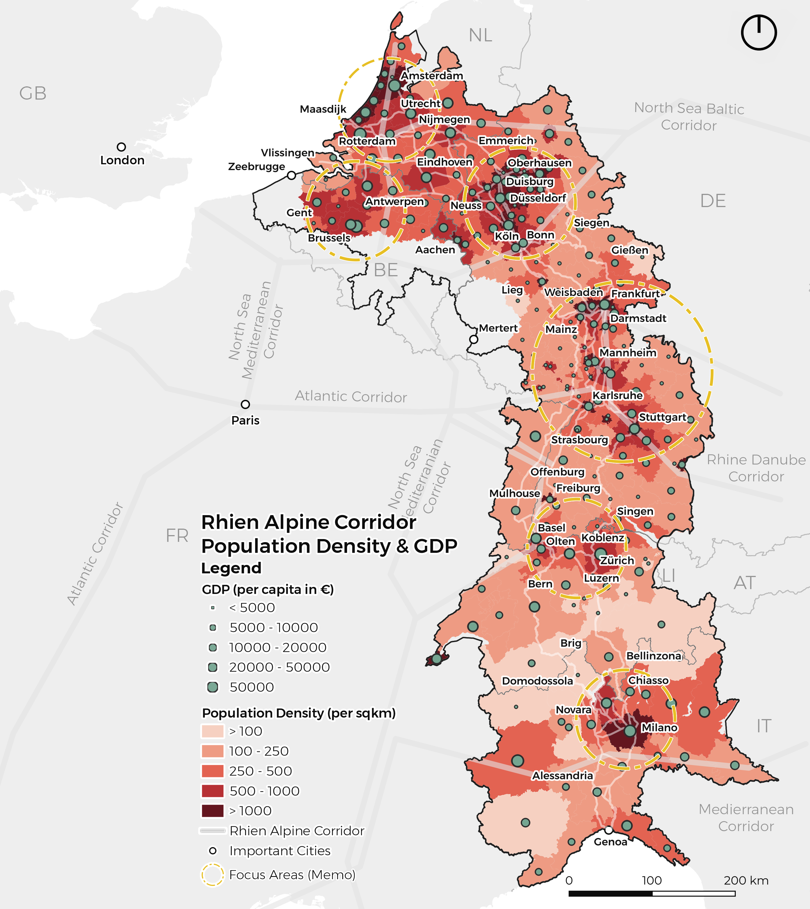
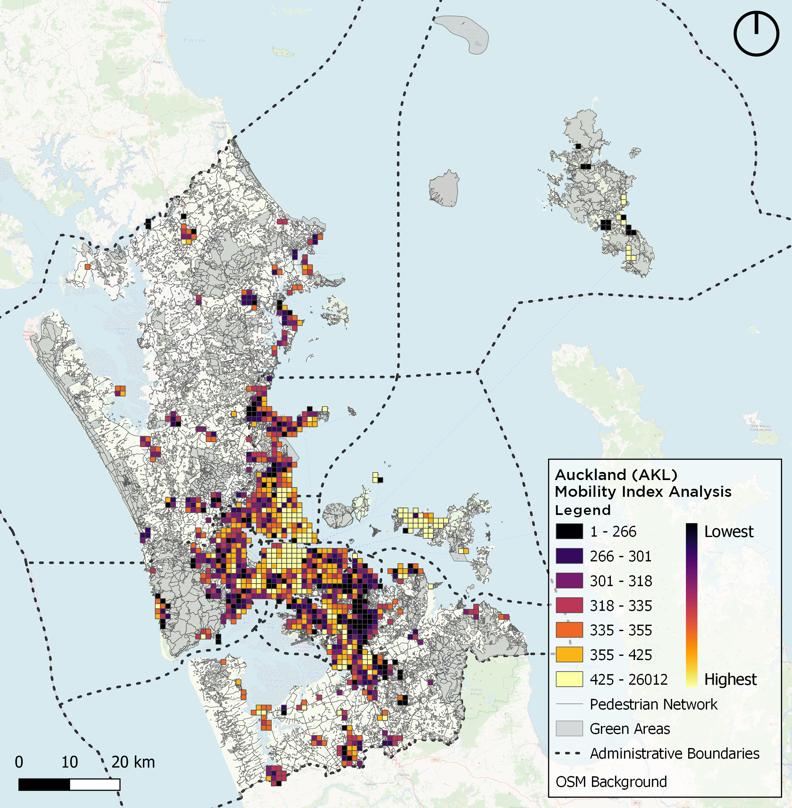

WebMap, Nizhny Novgorod/RU
Research Asisstance, RWTH Aachen
GDP & Density Analysis, Rhein-Alpine Corridor/EU
Integrated Project III, M.Sc.
The Rhine Alpine Corridor is a key economic region in Europe, featuring several large urban centers that drive growth. This concentration of economic activity, however, results in challenges such as inequality, traffic congestion, high housing costs, and environmental degradation. Using GIS technology, we analyzed these issues, particularly focusing on low-income settlements in high-density areas like Oberhausen and Liege, which struggle with access to opportunities and social cohesion.

The GIS analysis explored strategies for balanced regional growth, including polycentric urban development to create multiple economic centers and reduce central concentration. We also examined targeted industrial developments in low-income areas to address economic disparities. GIS mapping and spatial analysis helped identify key areas for infrastructure investments, such as high-speed rail links, improved public transportation networks, affordable housing, and community facilities. These investments were tailored to the unique needs of diverse communities within the region, considering their historical and ethnic backgrounds.

Movement and Morphology Analysis, Amsterdam/NL
Integrated Project II, M.Sc.
Aiming towards sustainability, the world is now shifting to a pedestrian and cycling-based spatial development. With the trend of work-from home culture, it is very important to have the basic amenities within walking distance such as retail, gym, or leisure in a residential environment. In the mobility index of Auckland, the study was carried out to analyze the spatial development and behavior of the pedestrians in Auckland. The index based on the facilities in the range of 1.5 km from each household. In the process of mapping walkability index, four weighted factors considered to form the equation: Transport Index x1.5 + Accessibility Index x1.3 + Safety Index x1.3 + Quality Index x1

Movement Analysis

Morphology Analysis
Mobility Index Analysis, Auckland/AUS
Mobility Research and Transport Modeling, M.Sc.
Aiming towards sustainability, the world is now shifting to a pedestrian and cycling-based spatial development. With the trend of work-from home culture, it is very important to have the basic amenities within walking distance such as retail, gym, or leisure in a residential environment. In the mobility index of Auckland, the study was carried out to analyze the spatial development and behavior of the pedestrians in Auckland. The index based on the facilities in the range of 1.5 km from each household. In the process of mapping walkability index, four weighted factors considered to form the equation: Transport Index x1.5 + Accessibility Index x1.3 + Safety Index x1.3 + Quality Index x1

Mobility Index Auckland
Interactive Mapping w/Spatial Data, Düsseldorf/DE
Territorial Analysis, M.Sc.
With developing technologies, it has become crucial to gather, process and present the spatial data with using programming languages such as Python. In the given example, the practice aimed at improving skills on the language using Jupyter Notebooks as a tool with ipyleaflet. The main goal was to create an interactive map which shows the oldest three schools in Dusseldorf.
The chosen dataset included necessary informations such as coordinates and names of the schools for further programming. The GeoJSON file was imported and printed with plot functions in GeoPandas library package. NumPy and MatPlotLib libraries were also used in the process. After making sure the data frame works without any bugs, the point data was coded to cluster and click-open with including location informations within Osmnx.